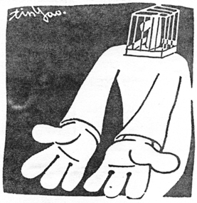
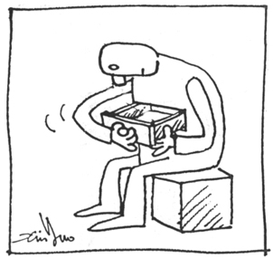

第七章 减肥
目前的医学观点，肥胖算不上是疾病，却是许多人共同的烦恼。市面上有许多减肥的方法，但却不是对每一个人都有效。有些人成功地减去了肥肉，不久精神松懈下来，人又胖了回去。
从这些现象看来，显然现代医学对肥胖的病理研究还没有真正理清楚。现代医学对肥胖的理解是人体营养过剩时，身体会把多余的脂肪贮存在皮下，于是就造成了肥胖，也就是肥胖所增加的物质是脂肪，是一种被储存的能量。
这种理论的根据，主要是观察一些冬眠的动物得来的。有些具有冬眠习惯的动物，在冬天到来之前会吃大量的食物，身体明显地胖了起来，然后整个冬天都在睡眠状态，身体就靠以脂肪形式贮存的能量支撑。
其实自然界中只有很少数的动物有冬眠的习惯，也许它们的身体，设计时就具备了这种机能。但是人类显然是没有冬眠的习惯和能力，在设计时应该没有具备这种机能。同时人类当中许多胖子的食量并不多，反而许多瘦的人食量大得惊人，却不见其将脂肪堆积在皮下，难道这种贮存能量的机能会因人而异？
仔细观察胖子身上的“脂肪”，当用手去“抓”、“捏”时，可以感觉那些多出来的“脂肪”是和身体分离的，似乎不是身体组织的一部分。当我们有机会检查市场买来的肥猪肉时，可以发现其中的一部分肥肉是和其组织不连接的，可以轻易地用手将之分离，但是有一部分肥肉则是直接连接在皮下组织，两者显然是不同的。
有些人身上的脂肪瘤会变换位置，而且明显地感觉到这些瘤和身体是分离的。也就是说这些多出来的物质，并不是人体的组织，而是组织间隙里的物质。这些物质有可能是含有能量的营养物质，更有可能是身体无力排泄出去的垃圾。
这些物质所以被称之为脂肪，其实只是因为从冬眠动物身上悟出的一点似是而非的道理而已，并不是真有确凿的证据。但是几乎今天所有的减肥理论和方法都是从这个论点发展出来的，都在努力地防止“脂肪”的增加和消减“脂肪”。主要的方法都在减少能量的摄取，或者把脂肪消耗掉。
例如，控制饮食防止吃进过多的热量转化成脂肪；运动消耗脂肪能量；甚至手术直接抽取脂肪等等，都是从动物冬眠的理论所发展出来的方法。
显然这些方法并不是太灵光，许多人就算用了这些方法也无法去除肥肉，甚至连减少肥肉继续增长都做不到；但是也有许多人就算不依照这种法则生活，也不会发胖。最大的讽刺是西方医学最进步的美国，每年在减肥市场上花了无数的金钱，但是仍然无法阻止肥胖人口的继续增长，据最新的统计预测，10年后的美国将有超过80％的过胖人口。这样的发展更说明了整个减肥理论有非常重大的缺陷，很可能完全错了。
仔细观察年龄在脸上和身上留下来的痕迹，可以发现随着年龄的增长，脸上和身上堆了愈来愈多的“东西”，这就像一幢老旧的房子，总是到处留下不可磨灭的痕迹一样。如果那些东西是脂肪的话，是不是意味着年龄愈大身体就贮存了愈多的能量呢？显然这一点和实际的情形正好相反，身上堆了愈少东西的人体能似乎更好一些。
肥胖不是吃得太多，而是排得太少
肥胖的真正原因很可能是当身体的血气能量不够，没有足够的能量将身体内部的废物排出体外，这些排不出去的垃圾堆积在身体内部组织的间隙，随着堆积垃圾的逐渐增加，人就慢慢地胖起来。
从这个逻辑来看，肥胖并不是能量过剩，身体将过多的能量储存下来；反而是能量不够，使身体没有足够的能量将垃圾排出体外。从能量观点来看，两者完全相反，前者是能量过剩，后者是能量不足。这样的逻辑和传统的认知几乎背道而驰，但是却能对各种肥胖的现象作出更合理的解释。
吃得少的人发胖，吃得多的人反而不发胖。用能量贮存的理论不能解释这两者的差异。
许多胖子的食量并不多，还是不断地发胖；经常听到胖子抱怨，连喝水都会胖，有时这并非形容词，而是真实的情况。许多体型瘦的人，吃再多的食物也不会发胖。这两种人的胖瘦和他们的食量并没有直接的关系，吃得少的人发胖，吃得多的人反而不发胖。用能量贮存的理论不能解释这两者的差异。但是用没有能量排出垃圾的理论，就很容易解释这个现象。
细胞是身体的最底层组织，每一个细胞都会独立地吸收营养和排泄垃圾，细胞中所排出来垃圾必须随着体液的流动，经过微血管回到静脉，再经肝、肾的过滤排出体外。如果其中任何一个环节发生问题，就会造成垃圾无法正常排泄，因而堆在细胞和细胞之间的间隙。初期分量不多，垃圾会悬浮在组织液中，随着时日的增长，垃圾愈来愈多，整个人体的重量和体型都愈来愈大。这些颗粒原来还呈液体状，慢慢地悬浮的小颗粒愈来愈多，体积也愈来愈大，最终形成块状的固体，从外表触摸起来硬硬的很结实，很多人还以为自己变结实了呢。
心脏病是肥胖的原因
身体内部所有液体的流动，最主要的动力就是来自心脏的搏动。因此，造成细胞垃圾堆积的最主要原因必定是心脏的问题。两则由统计分析得出的肥胖逻辑：一是肥胖的人容易得心脏病；二是随着经济的改善，饮食也跟着改善，营养过剩成为肥胖最主要的原因。多数人都同意这两个逻辑，但是真的是如此吗？
先从肥胖的人容易得心脏病谈起，中医和西医对疾病的认定有很大的差距。以心包积液为例，西医必须等透视照片的证据确认了心包积液高出了标准才能确认疾病的存在。但是中医从把脉中的沉脉现象可以立刻得知心包积液过多，通常这时就算用最进步的仪器检查，都不会被认定心脏有问题。可以说在心脏疾病的认定上中医远较西医敏感得多。
从中医的观点，大多数肥胖的人，心包经都是阻塞的，而且这种阻塞的情形通常都在他还没有真正肥胖的时候就出现了。实际的情形是由于心包经的阻塞（心包积液过多），使得经络中的组织液流动出现了障碍，导致垃圾的堆积，长时间的垃圾堆积最终才形成了肥胖。
心包经阻塞的人随着身体血气的愈来愈低，排不出去的垃圾愈来愈多，人愈来愈胖，同时心包积液愈来愈多，问题也愈来愈严重。心包积液过多引起的毛病，如心悸和心律不整也跟着愈来愈严重，因而被医生检查出心脏方面的疾病。由于肥胖的问题先被从外观看出来，心脏的疾病过了很久才被查出来。从统计上看来大多数的胖子最终得心脏病的比例很高，因此，肥胖就变成了心脏病的原因，和从中医理论所推论的结果“心脏病造成了肥胖”因果完全颠倒。

生了病的人总想找到能够药到病除的灵丹妙药，却不愿意调整自己的生活习惯，去除真正的病因。
再谈经济能力提升，造成饮食过剩，最终形成的肥胖问题。其实在发展中国家的经济能力提升期间，除了饮食改善之外，在家庭中的也增加了风扇、冷气和冰箱等电器用品。
记得小时候家里刚有电扇时，夏天从外面玩得满头大汗，最开心的就是对着电扇猛吹。现代的孩子则进到冷气房对着出风口吹冷气，同时到冰箱里拿一瓶冰的饮料，大口大口地灌进肚子里。通常这种行为，家里的长辈一定会制止，因为他们认为这会造成身体的伤害。
确实，满头大汗后，用这些人为的冷却方法是会对身体造成严重的伤害。当身体满头大汗时，正在排泄身体燃烧后所产生的垃圾，这时如果直接吹冷气或喝冰水，会使身体局部的感觉器官很快冷却下来，并且将这个信号传送给大脑，告知身体已冷却的信息，身体随即终止其原有排除垃圾的工作。但是实际上这种冷却信号是外来的而只有局部冷却，不是身体真正完成了排泄工作后发出的信号。当身体将排泄垃圾的工作停止之后，那些还没有被排出的垃圾则被留在身体里。
并非肥胖的人容易得心脏病，心脏病才是肥胖真正的原因。
更糟的是在人体满头大汗时，心脏是最热的器官，需要不断地散热，当外界的冷气或冰水打乱了身体的信息，会使心脏的散热工作也跟着突然终止，这种现象很容易造成心脏的严重伤害，心肌因散热不及而受损，使心脏的运行受到影响。
营养过剩的问题并不一定是肥胖真正的原因，冰水和冷气的不当使用很可能是肥胖更主要的因素。今日美国人用尽了各种减肥的手段，而人民肥胖的比例仍然不断增长的现象，很可能和他们长期以冰冷饮料为主要的水分来源，有非常密切的关系。
心包积液过多和心肌的疾病都会使得心脏的能力下降，进而造成身体体液流通的障碍，最终形成肥胖的体型。并非肥胖的人容易得心脏病，心脏病才是肥胖真正的原因。
不同体形的肥胖，有不同的原因
中医诊断学中的“望诊”，是非常重要的方法，其中又以“望形”最重要。“望形”时所“望”的就是肥胖的体形，也就是各个经络中垃圾堆积的状态。例如，前面章节提过的胆功能问题，会出现大腿外侧较胖或萝卜腿，即是“望形”的一种诊断实例。
全身性均匀的肥胖，是脾脏能力低下，无法把分散身体各部位的废水送走所形成的。当脾脏把水送到了身体的中段，剩下的就是肾脏再把废水排出体外。因此，当身体中段腰及臀部特别肥胖时，是肾脏能力低下无法把废水排出去的症状，堆在肾脏所在的区域的废水和垃圾，最终形成这种中段特别肥胖的体形。
并不是只有胖的人会有垃圾堆积，瘦的人就是健康而没有垃圾堆积。
另外额头上的皮下脂肪肥厚，以至于出现皱纹，主要由于该处的上方是大肠经筋经过的部位，因此，可以断言这个人大肠中的病灶较多；下巴两侧的脸颊肥厚，也是大肠经的问题。其上方接近耳朵的部位较肥厚，则是小肠经的问题；正面脸颊，眼下及鼻子两侧较厚者，则是胃部的问题造成的等等，都是依据经络理论所建立的诊断方法。
并不是只有胖的人会有垃圾堆积，瘦的人就是健康而没有垃圾堆积。实际上肺气较弱的人，身体无法吸收水分，喝进去的水没有分布到各个器官就直接排出去。如果这个人同时也有脾虚的问题，身体上也会堆积许多垃圾，但是垃圾中的水分很少，多数的垃圾都处于失水的状态，干干扁扁的，看起来不胖，摸起来很结实，黑黑瘦瘦的。
这种人一旦进行调养，当身体的血气上升到了阳虚水平，开始有能力清除垃圾时，会很快的将垃圾充水，使它能在身体的组织间流动，以便将之排出体外。因此，这个人会在很短的时间里，体重直线上升，体积也快速膨胀。我们就曾遇到过这样一个例子，病人在短短的几个月内，重了十几公斤，手臂也粗了许多。从一个黑黑瘦瘦的人，变成了白白胖胖的。
许多疾病的根源都和幼年的生活习惯有直接而密切的关系。
肠胃问题是肥胖最主要原因之一
当脾脏的能力不足时，心包容易产生积液，使得心脏的能力降低，心脏是人体血液的泵，当泵的扬程不足时，无法把血液顺畅的输送出去，整个身体的活力都降低，人体经络中的体液不易流动，废物就无法排出了。
造成脾虚最主要的原因，是身体的维修系统工作过于劳累，人体在受伤或受到细菌的侵入时，会出现这种现象。人体最容易受到细菌感染的部位，当然是最脏的肠胃了。由于脾虚的体质多半形成于幼年时期，许多疾病的根源都和幼年的生活习惯有直接而密切的关系。
前一节谈到的儿童肠胃感染，会使幼儿形成脾虚的体质，心包经经常阻塞，慢慢地愈来愈胖，而且容易流口水，这些“现象”其实是脾虚的真正症状。从中医理论，脾虚时会出现“脾不束肌”的症状，嘴唇的肌肉没有力量，幼儿又不像成人会有意识的加以控制，就容易流口水了。
这些容易受成人唾液感染的幼儿，多数是比较受到成人疼爱的孩子，才会经常被喂食成人接触过的食物。当其逐渐发胖，加上流点口水，更显得天真可爱，得到更多成人的疼爱，当然受到的感染也就愈多。
那些经常在社区里串门子的可爱孩子，多数长大之后都成了胖子。
那些经常在社区里串门子的可爱孩子，多数长大之后都成了胖子。而且这些孩子由于从小就处于血气能量不足的状态，日后也不容易长得太高，而形成矮矮胖胖的体型。这是最典型的“爱之适足以害之”的例子。
这些幼儿的肠胃问题，有轻重之分，比较严重的人，在很小的时候就成了小胖子；比较轻的人，直到年纪较大时，才变成为胖子；有的甚至到了中年才开始发胖。
增加身体的能量，是减肥的第一课
从肥胖是能量不足的观点来看，当人体的血气能量不够时，人体为了节省能量的支出，会减少一些比较不重要的工作，垃圾的排泄是第一个被搁置的，因为这些垃圾暂时不清理，并不会对人体造成太大的伤害。
从“能量不足是肥胖的原因”的观点所发展出来的减肥方法，当然和大家熟知的“能量过剩是肥胖的原因”的方法有很大的不同。原来运动、节食、热量控制的手段，多数是消耗能量的方法，减少身体的总体能量。而在新的观点看来，垃圾排不出去主要是能量不够，这些方法会使能量更低，是反其道而行的。因此，减肥时不应该减少身体的能量，反而要增加身体的能量。
表面上肥胖的原因有二，一是能量不够，二是经络不通。
在经络研究中，发现经络是人体血管系统外的另外一个体液流场，这个体液流场负责将营养运送到细胞周围供细胞吸收，同时也将细胞所产生的垃圾带走。因此，经络不通是垃圾堆积的另一个重要原因。
传统的减肥方法中，运动具有强化心脏、疏通经络的功效，因此仍然能达到减肥的目的。运动还有另外两个好处。一是会大量消耗人体的能量，造成身体的疲倦感，使得晚上的睡眠品质得到改善，也会增加睡眠的时间。二是运动消耗了大量的能量后，也会增加食物的摄取量。因此，运动真正提升人体能量的功效，是其后续的饮食、休息和睡眠增加，以及因运动而使经络畅通，身体机能正常，产生了更多的血气能量。
综合上述结果，表面上肥胖的原因有二，一是能量不够，二是经络不通。其中经络不通和能量不够有密切的关系，肥胖的人能量不够的原因，主要是风寒的问题所造成的吸收障碍，当然还有睡眠习惯的问题。利用一式三招养生法，是减肥最简单的方法，也是养生最重要的功课，完全顺应人体自然运行规律。

灵丹妙药就在身体里，却在外面不停的找。
在减肥的过程中，身体会出现许多变化。这些变化用目前普遍的观念来看，很容易产生误解，因而采取了不当的措施，这些措施经常会终止了身体的减肥过程。因此，在这里列出几种可能发生的现象，以及其正确处理方法。
减肥不是减重量，而是减体积
由于在养生过程中体内的血液总量会逐渐增多，也使得人体的骨髓和内脏中的含血量相对提高。这部分的重量改变并不会使人更胖，但会使体重增加，在目前以体重来衡量减肥成效的方法中，很容易被误以为又发胖了。
有了这部分增加的血液也就是血气能量，人体才有能力排除积存在体表的垃圾，这些垃圾的排除，会使体积减小，才能真正达到减肥的目的。
这时体重的变化必须考虑血气上升时增加的血液重量，再减去被排出去的垃圾重量，如果增加的血液重量大于排出去的垃圾重量，则会出现“人瘦了，体重反而增加”的结果。由于血液的比重大于1，而垃圾的比重只有血液的70％，比较轻，这是非常可能出现的结果。因此，减肥不能用体重来衡量成效，必须真正地测量体积。
减肥不能用体重来衡量成效，必须真正地测量体积。
发胖是减肥必要的中间过程
人体的垃圾主要是从身体的各个部位，透过经络和血管的网络系统输送，再由相应的脏器处理后排出体外。身体内部的垃圾，除了在消化系统中的食物残渣，会从肠道中以大便的形式排泄之外，其它非消化道中的垃圾必定以液态的形式从小便或汗液中排出体外。
成年人的减肥，因脂肪堆积太久，逐渐形成颗粒或结成板块，使得这些垃圾无法顺利透过人体运送垃圾的通道排出体外，身体必须先将这些固态垃圾充水，使之稀释成较小的粒子，再随着体液的输送从小便或汗液排出体外。
在垃圾充水的过程中，会使人先行发胖，体重快速增加，等到垃圾排出去了再瘦下来，许多人一休息就发胖，就是人体休息时血气增加了，立即进入充水过程。在充水过程时，会喝大量的水，小便并不见增多，但体重却在很短的一两天内迅速增加1～3公斤；当排出垃圾时，虽不喝水也会有大量的尿液，同样的也在一两天内迅速的减少1～3公斤。
通常皮肤愈黑，不常运动，但身体却很结实的人，表示脂肪堆积的情形也很严重，由于是肺虚的体质，使大多数垃圾的含水量偏低。因此，在身体调养过程中更容易出现大量充水的现象。由于每次排出体外的垃圾有限，多数人都必须反复经历相同的过程许多次，不断重复胖胖瘦瘦的变化，才能达到减肥的目的。
在这个过程中，可以发现原来很结实的部位，开始渐渐变得松软，最后再逐渐瘦下去。
原来就没有肌肉的人，有可能减得太瘦
当一直保持人体处于充足血气状况时，人体会将所有堆积的垃圾排除。如果原来缺乏运动，肌肉的体积太小的人，有可能一瘦不可收拾，甚至到了皮包骨的地步。
如果所用的减肥方法会对人体造成伤害，组织中会堆更多的垃圾，那么胖回来之后，就会比减肥之前更胖。
速成的减肥多数是将垃圾脱水
在许多减肥的广告中都能看到，那些减肥的药品可以在很短的时间就达到了减肥的目的，那些方法多数是利用脱水的方法，让垃圾中的水分快速流失。
从中医的理论，我们可以找到两种让人体快速失水的方法。一种是造成人体出现肺虚的症状，会使人体减少各个组织的供水；另一个是造成肝热的症状，会使人体出现“肝逼肾水”的现象。换句话说，只要把肝和肺弄出毛病，就能出现快速减肥的效果。这就像有些癌症患者，会在1个月之内失去10多公斤的体重一样。
这种脱水的方法，由于垃圾仍在体内，仍然是身体急欲去之而快的东西。因此，当体力恢复后，必定还是得将之清出体外。于是只要身体转好就立刻开始充水，人体就快速地发胖。这也就是多数的减肥方法，当停止了减肥措施后，很快就胖回来的道理。如果所用的减肥方法会对人体造成伤害，组织中会堆更多的垃圾，那么胖回来之后，就会比减肥之前更胖。
传统中医疏通经络的各种方法，包括针、灸、按摩以及疏通经络的运动等，可以使身体经常维持在最佳运行的状态，组织间的垃圾更容易去除，身体的各项机能也会更好，对身体整体的发展当然都是有益的。也都能使身体达到减肥的目的。
身体健康了体内的垃圾自然去除，人也就瘦了下来。
这种减肥的方法，实际上是追求身体真正的健康，身体健康了体内的垃圾自然去除，人也就瘦了下来。虽然需要的时间长一点，但是从此建立了良好而健康的生活习惯，只要继续保持这种生活方式，不但不会再胖回去，同时再也不受各种慢性病的威胁。
减肥实例
有一个患者，从小就是肥胖的体型，因此，家人对他的饮食严格限制，越胖限制就越严，而且尝试了所有可能的减肥方法，仍然控制不了他体重的上升趋势，到了18岁体重已经接近100公斤了。
经过诊断，其实他并不如西医所说的没有病，只是单纯的肥胖。他的一双大腿内侧脂肪堆积得极厚，走路时两腿内侧会互相摩擦，严重时会造成破皮。大腿内侧是肾经通过的部位，肾经的垃圾堆积多，说明他的两个肾的能力都很差。大腿外侧脂肪也很厚，这是胆经的能力不够所致。胆经能力不足，胆汁分泌一定偏少。这些都是明显疾病的症状，只是没有不舒适的感觉而已。
任何时间只要有机会，而且想睡，就尽量睡。
由于长期的节食，营养不良，血气能量太虚，以至于连身体内的垃圾都排不出去，在全身到处堆积了垃圾，也就是我们所看到的肥胖。因此，减肥的第一步就是要求他改善生活习惯，增加血气能量。
首先，就是要改善生活习惯增加血气能量，首先请他的母亲，安排三餐正常的饮食，而且开始时尽量让他吃营养好的食物，只要吃得下就让他吃。这一点他非常开心，因为从小他就没有好好吃过。其次，要求将原来每天的晚睡习惯，改变成每天晚上8、9点就睡，只要时间许可，想睡多久就睡多久。任何时间只要有机会，而且想睡，就尽量睡。同时要求每天要做敲打胆经的功课，先这样回去好好养一个月再来。
一个月以后，虽然不控制饮食，体重并没有增加，也没有减少。原来想尽方法的节食，都不能阻止发胖的趋势，现在每天没有限制的吃和睡，按照他过去的经验以及传统的观念，他担心一定会胖得更快，他的家人也都很担心。实际上这个担心的结果并没有发生，一个月下来，体重没有变化，患者初步相信，吃、睡和肥胖并不一定有直接关系。
接着教他的家人为他进行经络按摩，主要是按摩他的胆经和心包经。他的饮食还是没有要求任何节制，继续加强睡眠和定期经络的按摩。3个月后患者明显瘦了许多，在吃、睡完全放任的条件下，体重减少了8公斤。
血气能量差，没有能力处理垃圾，垃圾越积越多，人就越来越胖。
这个患者，从小就有肠胃的感染，形成了脾虚的体质，进而影响心脏，使得心包上的油脂特别肥厚，加上能量一直不够，母亲从小就严格限制了他的饮食，使他根本吸收不到足够的营养。血气能量差，没有能力处理垃圾，垃圾越积越多，人就越来越胖。越胖就越不敢吃，越不敢吃，血气能量更差，垃圾就越排不出去，形成了恶性循环。
如果他母亲从小不去管他，让他想吃就吃，想睡就睡，可能他现在反而不会这么胖。因此，减肥的第一步，首先要养足他的血气能量，再利用经络按摩，协助去除心脏外面肥厚的油脂，使心脏的搏动恢复正常的能力，让皮下组织中的体液能正常流动。将垃圾逐步运出体外，人就会慢慢瘦下来。这种方法需要比较长的时间和正确的观念，但是由于彻底地清除了垃圾，达到真正的减肥。